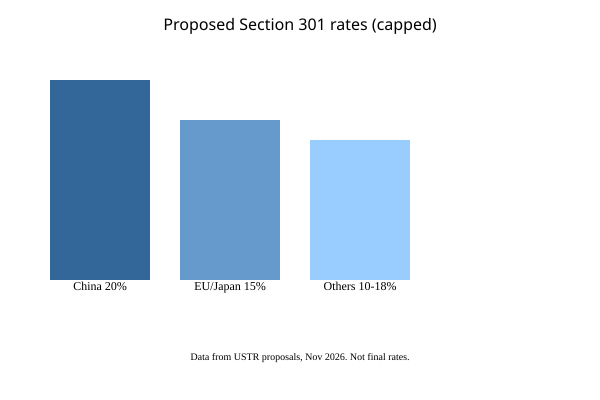

Washington · trade · 26 November 2026
USTR proposed additional Section 301 tariffs on 14 economies after excess-capacity findings.

What is agreed across desks
On 25 November 2026 the Office of the U.S. Trade Representative announced affirmative determinations under Section 301 of the Trade Act of 1974 in 14 of the 16 “structural excess capacity” investigations it initiated on 11 March 2026. The economies are Bangladesh, Cambodia, China, the European Union, India, Indonesia, Japan, Korea, Malaysia, Singapore, Switzerland, Taiwan, Thailand, and Vietnam. USTR made no determination for Mexico or Norway at this time. For each of the 14, USTR proposed additional tariffs on all goods, subject to product exemptions, at rates ranging from up to 15 percent (EU, Japan, Korea, Switzerland, and Taiwan) to up to 35 percent (Vietnam). China faces a proposed rate of up to 20 percent on most goods and up to 10 percent on goods listed in one annex, net of existing forced-labor Section 301 duties.
Trade-law summaries from Holland & Knight, Sandler Travis Rosenberg, Flexport, and Global Trade & Sanctions Law agree on the list of economies, the proposed rate ranges, the treatment of existing duties, and the procedural calendar: written comments due 5 January 2027, public hearings beginning 25 January, and no effective date set. The proposals are calibrated against existing bilateral framework and reciprocal trade agreements and, for China, against the Busan/Kuala Lumpur truce that expires on 10 January 2027. Alternative higher rates are proposed if consultations and existing commitments are judged unsatisfactory.
What is only a quote
Senior U.S. officials told Reuters and other outlets that the Chinese rate could rise to 40 percent if the truce unravels or Beijing fails to meet commitments. Those statements describe contingency language already present in the formal notices; they are not independent measurements of Chinese compliance. Claims that the measures will “prise global trade from China’s grip” or that they rebuild a tariff program previously cut by courts are framing by particular outlets; the formal notices state only that the practices are unreasonable and burden or restrict U.S. commerce.
Mechanism / history a reader needs
Section 301 of the Trade Act of 1974 authorizes the U.S. Trade Representative to investigate foreign acts, policies, or practices that are unjustifiable, unreasonable, or discriminatory and that burden or restrict U.S. commerce. If an affirmative determination is made, USTR may impose duties or other restrictions. The present investigations examine industrial policies that, in USTR’s view, create manufacturing capacity in excess of demand, often supported by subsidies, and that result in exports that undercut U.S. producers. The investigations opened on 11 March 2026 covered 16 economies; after reviewing roughly 1,070 public comments and hearing from nearly 140 witnesses, USTR determined that practices in 14 of them met the statutory standard.
The proposed rates are not blanket additions. Most are “net of” existing Section 301 duties and, for certain partners, ordinary most-favored-nation rates. For China the 20 percent figure is intended to sit within the ceiling of the existing truce; goods already subject to the 12.5 percent forced-labor Section 301 rate would see a smaller incremental duty. Vietnam’s 35 percent rate falls to 20 percent if a trade agreement is finalized; India’s 25 percent falls to 17 percent under an agreement; Singapore’s 20 percent falls to 10 percent under an agreement. No tariffs take effect before the comment and hearing process concludes. The Federal Register notices themselves are the operative documents; secondary summaries are useful but not authoritative.
Earlier Section 301 actions on China (2018 technology-transfer investigation) and on forced labor remain in place and interact with the new proposals. Court challenges to prior tariff programs are part of the background; the present notices do not themselves resolve those cases.
What the story is not
It is not the imposition of tariffs. It is a proposal subject to comment. It is not a finding that every listed economy has identical practices; the China report is the most extensive. It is not a statement about the midterm elections or any particular political outcome. The photograph above is a type photograph of a container terminal. It is not a picture of any specific vessel or cargo affected by the proposals.

Source articles and scores
| Outlet | Headline | T | N | C |
|---|---|---|---|---|
| Holland & Knight | USTR Proposes Tariffs Following 14 Section 301 Manufacturing Excess Capacity Investigations | 95 | +2 | 92 |
| Sandler Travis Rosenberg | Section 301 Tariffs of 15 to 40 Percent Proposed on 14 Trading Partners | 94 | +5 | 90 |
| Flexport | USTR Proposes New Section 301 Tariffs on 14 Economies, but Nothing Takes Effect Before January 25 | 93 | 0 | 95 |
| Global Trade & Sanctions Law | USTR Proposes Section 301 Tariffs on 14 Economies in Structural Excess Capacity Investigations | 94 | +3 | 88 |
Images: Wikimedia Commons type photograph of a container terminal linked via Special:FilePath. Captions state they are not event-specific. Chart is an original local SVG. onerror falls back to committed SVG. No CORS attribute.